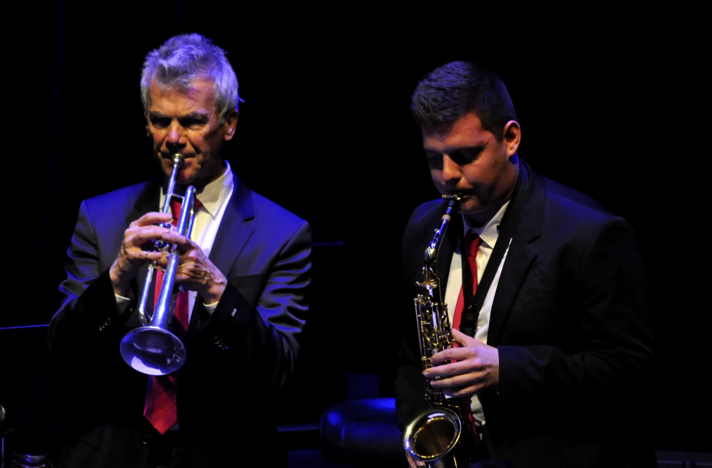
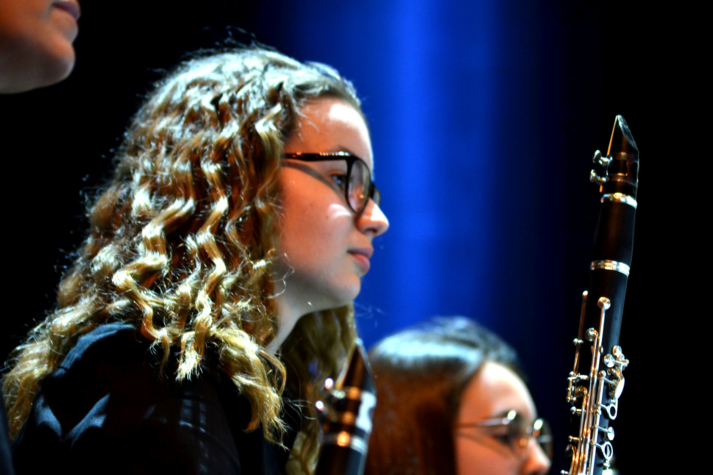
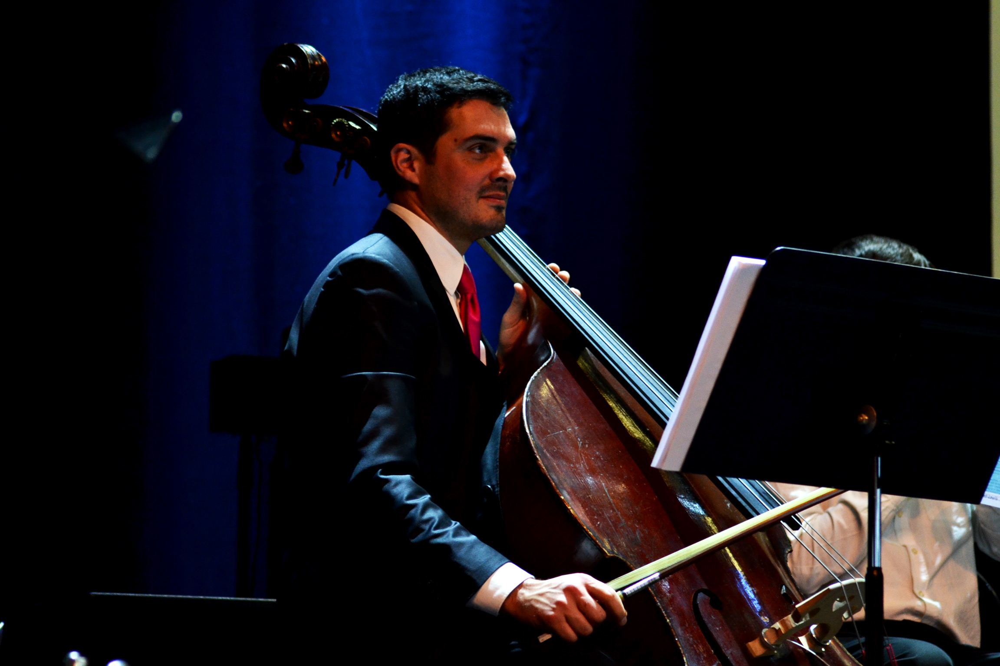
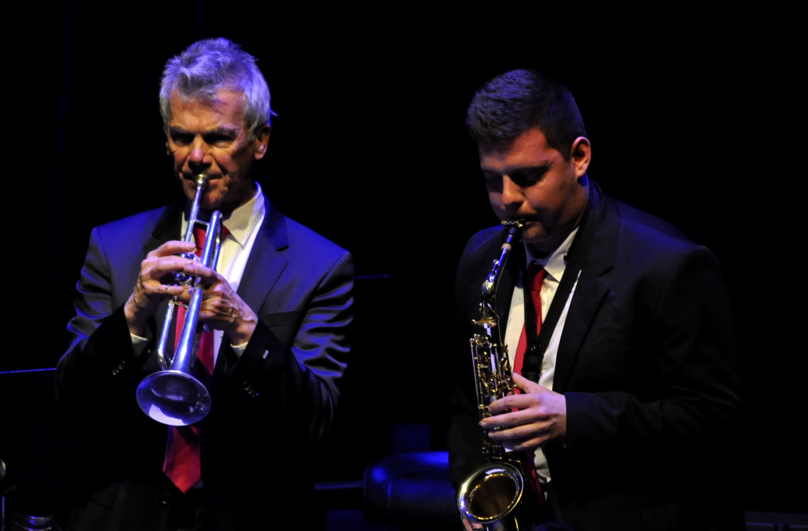
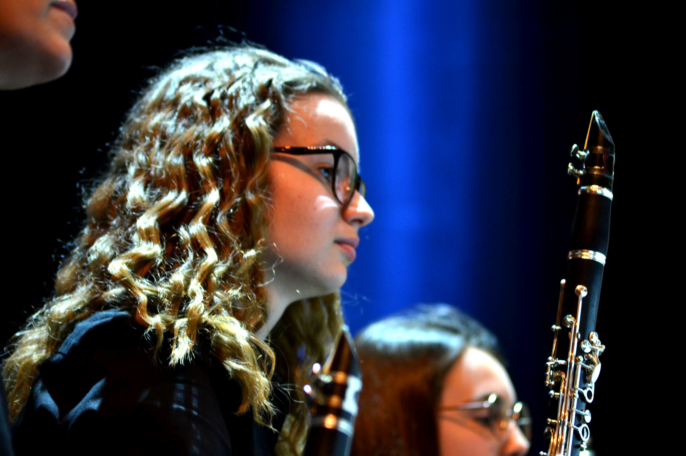
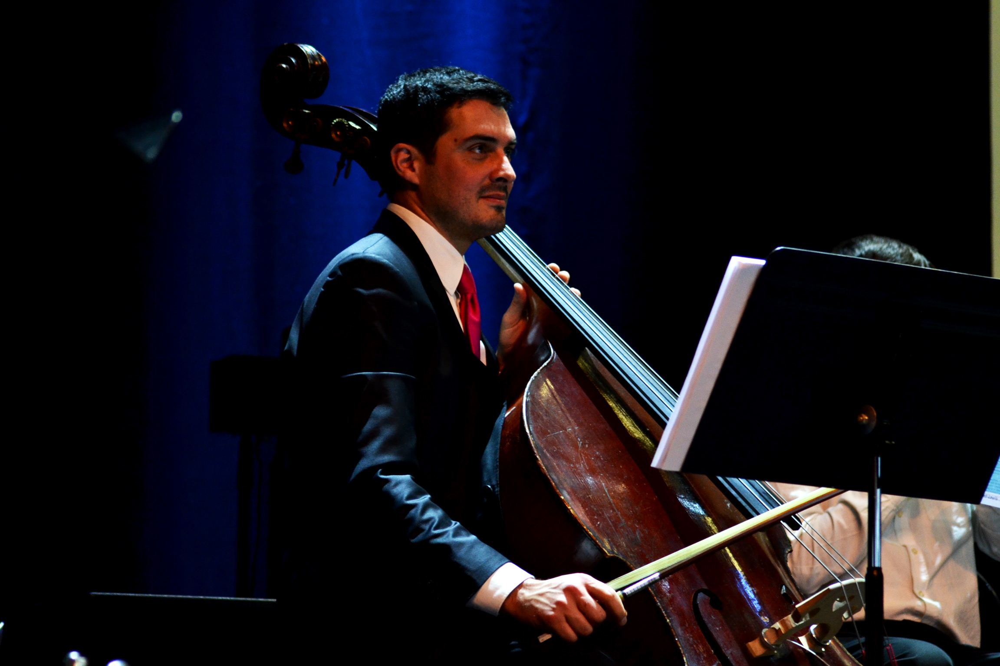

Nous travaillons actuellement sur une vidéo dans le cadre du concours "Je filme le métier qui me plaît". Quel métier avons-nous choisi ? nous demanderez-vous.
Et bien, pour cette édition 2020, nous décidons de rendre hommage au métier d'horloger !
Ainsi, nous sommes en plain dans la conception de ce court-métrage.
 





Une toute jeune école de musique vient d’ouvrir ses portes au cœur d’un petit village Alsacien, Hésingue. Cette école de musique enseigne aux plus jeunes les bases de la musique jusqu’à leur intégration au sein d’un orchestre adulte. C’est dans le but de les distinguer des autres orchestres de musique du village que nous avons été sollicité dans la réalisation de ce logo. Nous nous sommes donc lancés dans une création aux couleurs fraiches du printemps, rappelannt le calme et le dynamisme de l’enfance, le tout sous la forme de l’instrument le plus pratiqué au sein de l’orchestre. Les couleurs et le design renvoie une image de modernité et de jeunesse pour cette toute nouvelle école de musique.
Une super entreprise de maquillage écolo : HEMM, nous a contacté pous qu'on s'occupe de leur identité visuelle. Au bout de quelque réunion, leur logo était créé, à leur image : éco-friendly et amicale.
Une super entreprise de maquillage écolo : HEMM, nous a contacté pous qu'on s'occupe de leur identité visuelle. Au bout de quelque réunion, leur logo était créé, à leur image : éco-friendly et amicale.
Dans le silence du matin et la fraiche lumière du jour, nous croisons des skateursn des gothiques, des classiques, des bohèmes ou encore des hipsters... Impossible de distinguer leurs origine. Tous ayant un style bien défini, nous avons droit à un défilé haut en couleur par cette s belle journée !
On les voit déambuler dans les rues d'une superbe ville suisse. Ces qulques pqs nous invitent à la découverte de l'univers de tout ce petit monde.
Ainsi malgré toutes ces différences, un seul élément les uni... A vous de le découvirir !